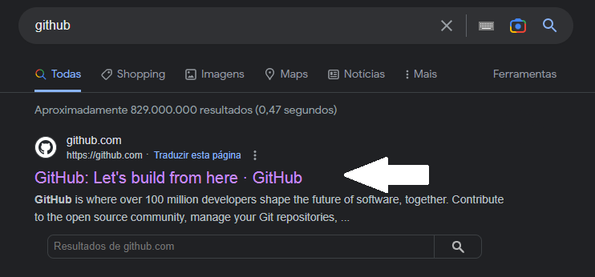
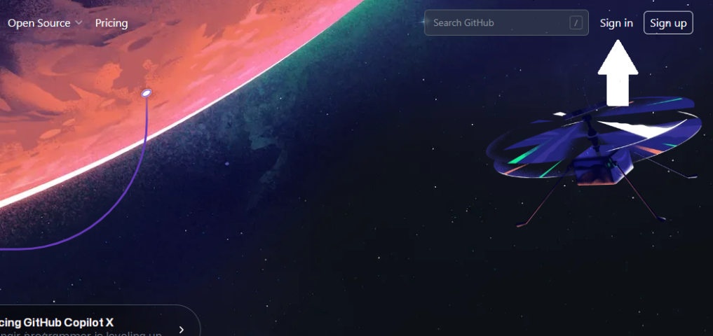
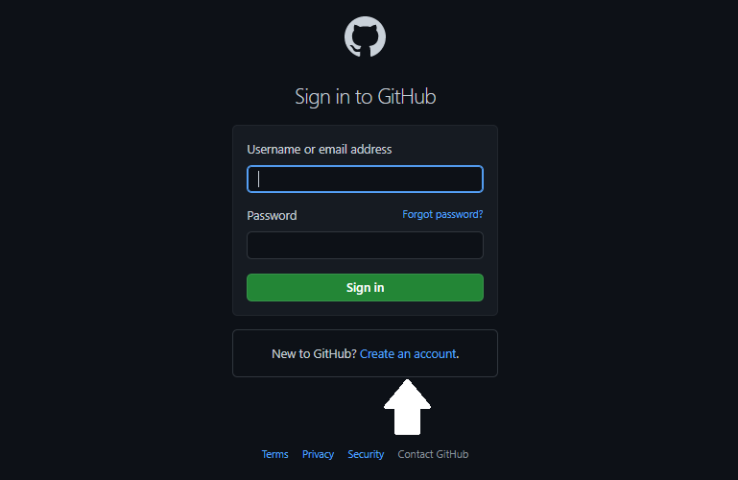
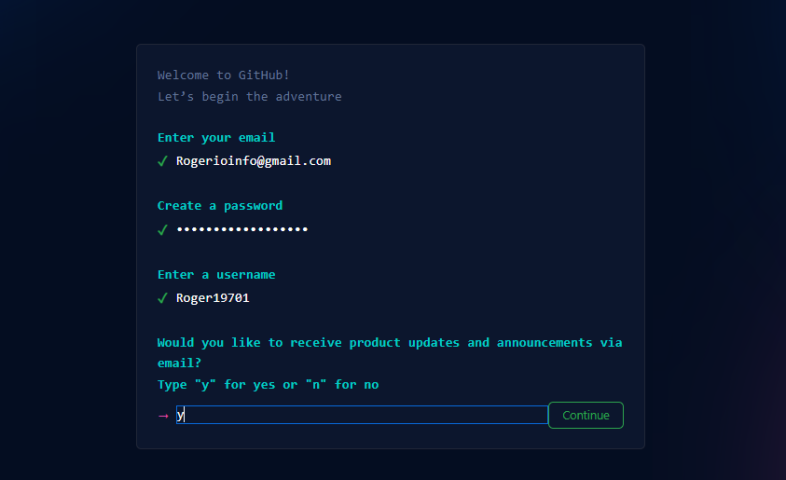

O que é o GitHub? a conhecida 'rede social para programadores'
Veja o que é o GitHub e como criar sua conta nele.
O que é o GitHub?
O GitHub é um repositorio remoto que usa a nuvem para hospedar os repositorios locais, ele é um serviço que permite criar diversos repositórios remotos na nuvem para guardar projetos e visionamentos.(existem tambem outros alem dele como o GitLab, o Bitcuket, e muitos outros).
E como o tempo o GitHub começou a ganhar muitas funcionalidades extras que foram transformando o serviço em uma grande 'rede social para progamadores'. Que alem de guardarem os codigos lá, podem se comunicar um com os outros e até colaborar com o projeto de outras pessoas que ficam disponivel publicamente.
Como criar uma conta do GitHub?
Fizemos um passo a passo bem simples sobre como criar sua conta no GitHub
1º Procurando o site:
primeiramente pegue um computador conectado a internet e va no seu navegador e pesquise por GitHub na barra de pesquisa
2º Como logar:
após ter entrado no site do GitHub no canto superior direito da tela clique na opção sign in (caso não tenha conta) se já tiver é so clicar na opção ao lado sing up.
3º logando:
quando voce estiver dentro da tela de login vai ter uma opção mais embaixo escrito "Create an account" clique lá e você será redirecionado(a) para fazer a criação da sua conta.
4º Criando a conta:
agora que estamos criando a conta use um email que funcione, crie uma senha e dê um nome de usuario a sua nova conta, a ultima opção você pode escolher entre receber ou não receber updates ou anuciamentos via email apenas digitando "Y" para sim ou "N" para não.
após isso terá que fazer uma confirmação que aparecera para ter certeza que vc não é um robo, Depois disso é so aproveitar sua nova conta.
Caso já tenha uma conta existente no site do GitHub Basta apenas clicar na opção sign up para poder logar de novo na sua conta já existente
